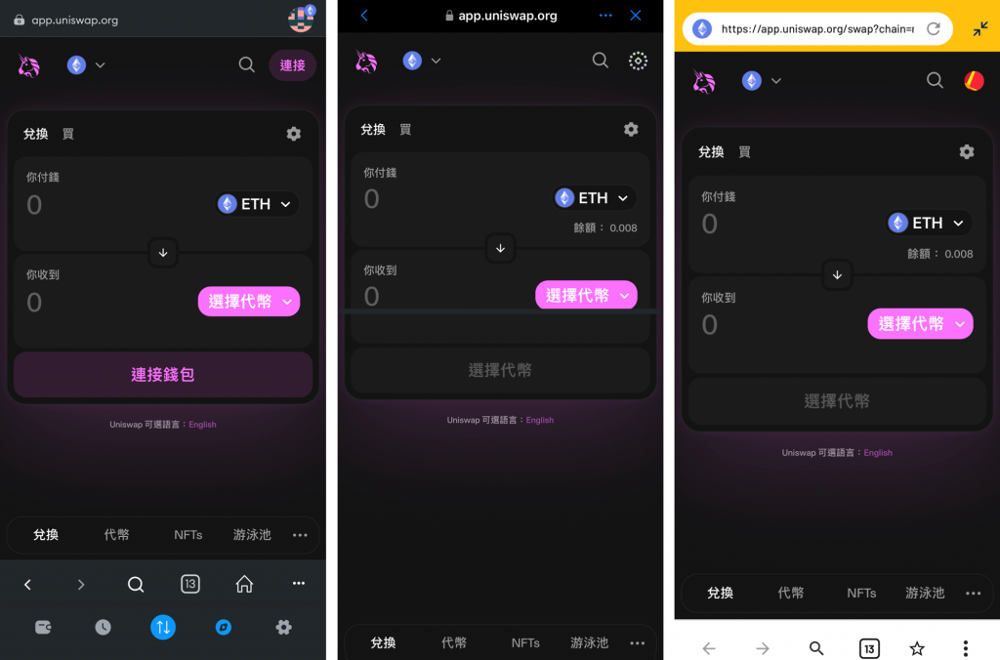
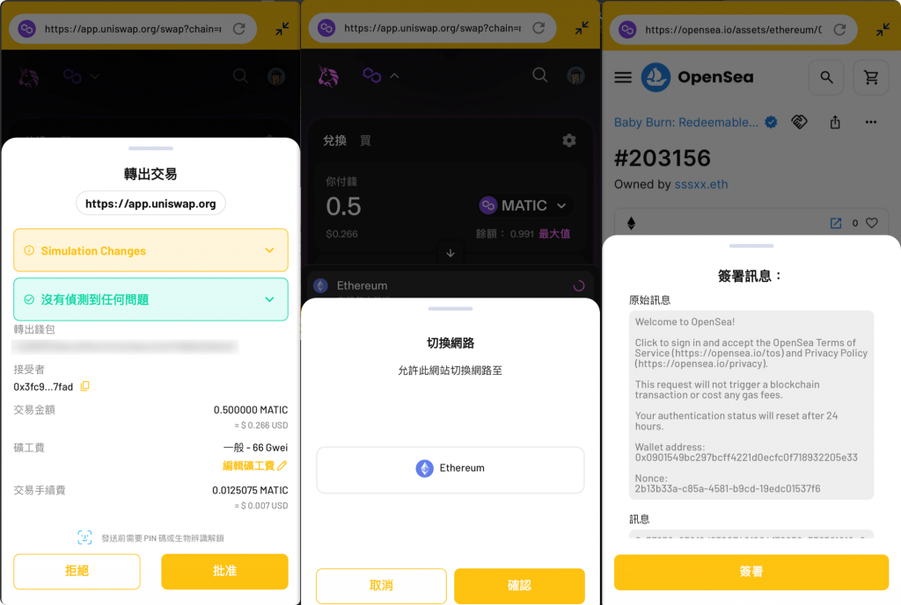

今天要來介紹的是錢包 App 中的 DApp 瀏覽器如何實作，來幫助使用者在任何裝置與場景上都能方便透過錢包連上 DApp。這個功能在各個主流錢包 App 中都有提供，讀者不妨先試用過，會對今天的內容更加有感。
昨天提到 Wallet Connect 適合的場景是錢包 App 連接桌面瀏覽器上的 DApp，而當如果使用者想要都在手機上操作 DApp，其實也可以使用 Wallet Connect。使用者可以在手機上選擇用 Chrome 或 Safari 等瀏覽器開啟 DApp，並在連接錢包時選擇用 Wallet Connect 連接，選擇對應的 App 後他會透過 Deep Link 的方式直接跳轉到錢包 App 中要求連接，並在後續每次需要簽名時直接用 Deep Link 跳轉到錢包 App。但這樣的做法會讓使用者在兩個 App 之間一直切換，並不順暢。
因此要在手機上操作 DApp 最直接的方式就是在錢包裡有個內建的瀏覽器可以用，並自動讓使用者的錢包連上瀏覽器中的 DApp，這樣就能在錢包 App 中流暢的進行所有的 DApp 操作了。這也是為什麼這個功能如此重要，對每個錢包 App 來說都是標配。下圖由左至右分別是 Metamask, Trust Wallet, KryptoGO Wallet 的 DApp 瀏覽器畫面：

要實作 DApp 瀏覽器需要將 DApp 與錢包 App 之間的通訊串起來，由於 Metamask 的 Mobile App 和 Extension 都是開源的，可以參考他們的實作方式並移植到 Flutter 中。
在 Metamask 的 Github 可以找到一個 mobile-provider repo，他其實是 Metamask Mobile App 中在開啟任何網頁時會用被注入進網頁的 JS Code，而且他是一個 Ethereum Wallet Provider（在 Day 16 有介紹過相關概念）。因此它提供了可以把瀏覽器中的 DApp 跟錢包 App 串起來的關鍵橋樑：當這個 Wallet Provider 從 DApp 接收到 JSON-RPC Request 時，他就會把這個請求丟給 Metamask Mobile App 處理，等待 App 處理完後拿到其回傳的結果再返回給 DApp，形成一個完整的 JSON-RPC 呼叫。
這個功能的核心在 MobilePortStream.js
檔案中，可以看到有個 MobilePortStream.prototype._write
function 如下：
[code] MobilePortStream.prototype._write = function (msg, _encoding, cb) { // … if (Buffer.isBuffer(msg)) { const data = msg.toJSON(); data._isBuffer = true; window.ReactNativeWebView.postMessage( JSON.stringify({ …data, origin: window.location.href }), } else { if (msg.data) { msg.data.toNative = true; } window.ReactNativeWebView.postMessage( JSON.stringify({ …msg, origin: window.location.href }), ); } // … }
[/code]
因此所有 JSON RPC request 都會通過
window.ReactNativeWebView.postMessage 的方式打到 Metamask
用 React Native 實作的 App 中，而 ReactNativeWebView 這個
property 是由 react-native-webview
套件提供的可以用來跟 React Native App 溝通的橋樑。
到這裡就可以想像出在 Flutter 中實作 DApp 瀏覽器的思路了：只要找一個 Flutter 瀏覽器的套件，然後把上面的 mobile-provider 程式碼中打到 React Native 的部分，換成打到 Flutter 瀏覽器提供的 property，這樣在 Flutter 中就可以用對應的 JSON RPC message handler 來接到請求並處理。
Flutter 中有一個套件叫 flutter_inappwebview，可以方便的在 App 中加入瀏覽器的功能，還允許我們自定義要注入的 script，而這正是在實作 DApp browser 功能所需要的。他的官方文件中關於 JavaScript Communication 的介紹就有提到如何從網頁端呼叫 App 端的程式碼：
[code] const args = [1, true, [‘bar’, 5], {foo: ‘baz’}]; window.flutter_inappwebview.callHandler(‘myHandlerName’, …args);
[/code]
只要呼叫 window.flutter_inappwebview.callHandler 即可
並且在 InAppWebView widget 中的
onWebViewCreated 可以使用
controller.addJavaScriptHandler 來加入對應的 handler：
[code] onWebViewCreated: (controller) { // register a JavaScript handler with name “myHandlerName” controller.addJavaScriptHandler(handlerName: ‘myHandlerName’, callback: (args) { // print arguments coming from the JavaScript side! print(args);
// return data to the JavaScript side!
return {
'bar': 'bar_value', 'baz': 'baz_value'
};
});
},[/code]
所以我們要做的就是將 Mobile Provider 中的
window.ReactNativeWebView.postMessage換成window.flutter_inappwebview.callHandler，就可以從
Mobile Provider 呼叫到 Flutter code 了：
[code] if (Buffer.isBuffer(msg)) { const data = msg.toJSON(); data._isBuffer = true; window.flutter_inappwebview.callHandler( ‘handleMessage’, JSON.stringify({ …data, origin: window.location.href }) ); } else { if (msg.data) { msg.data.toNative = true; } window.flutter_inappwebview.callHandler( ‘handleMessage’, JSON.stringify({ …msg, origin: window.location.href }) ); }
[/code]
修改完MobilePortStream.js後可以執行
yarn build來產生 minimize 後的 JS code，就可以放入 Flutter
專案中並在後續注入進瀏覽器頁面中。
InAppWebView widget 有提供在網頁中執行任意 JS Code
的方法（官方文件），包含使用
initialUserScripts 來在頁面開啟後的一開始執行 JS
Code，或是使用 controller.evaluateJavascript
來在任意時間執行 JS Code。由於我們想在頁面載入時就把 mobille provider
注入進去，因此可以使用 initialUserScripts 屬性，搭配使用
rootBundle.loadString('assets/js/init.js') 把剛才編好的 JS
Code 載入進來執行：
[code] Future
// in widget
return FutureBuilder<String?>(
future: browserInitScript,
builder: (context, snapshot) {
if (snapshot.hasData) {
return InAppWebView(
initialUserScripts: UnmodifiableListView<UserScript>([
UserScript(
source: snapshot.data ?? '',
injectionTime: UserScriptInjectionTime.AT_DOCUMENT_START,
),
]),
// ...
);
} else {
return const Center(
child: CircularProgressIndicator(),
);
}
},
);[/code]
裡面使用了 FutureBuilder 來處理還沒有載入完成
init.js 檔案的狀況，這樣就能成功在頁面載入時注入 Mobile
Provider 了。
再來則是要監聽 DApp 端呼叫的 JSON-RPC Request 並回傳結果，因此需要在
onWebViewCreated 中註冊一個 JS handler：
[code] onWebViewCreated: (controller) async { controller.addJavaScriptHandler( handlerName: ‘handleMessage’, callback: (args) async { final json = jsonDecode(args[0]); // now json[“data”] is the JSON-RPC request object }, ); },
[/code]
只要 handlerName 中設定的值跟 Web 端在呼叫
callHandler 時使用一樣的名稱即可。這樣就可以拿到從 DApp
而來的 JSON-RPC 請求開始處理。
DApp 要實作的 JSON-RPC 方法非常多，Metamask
官方文件中就列出了近 50 個他支援的 JSON-RPC 方法，但其實有許多
JSON-RPC 方法可以直接傳遞給 Alchemy 來處理，包含
eth_gasPrice, eth_blockNumber,
eth_estimateGas
等等，因為這些方法都是不依賴於當下連接的錢包，也跟簽名沒有關係。
在前面的內容我們已經介紹過 App 中簽名相關的 JSON-RPC method（包含
eth_signTransaction, personal_sign,
eth_signTypedData_v4,
…）以及如何簽名交易，因此今天相關的程式碼會省略。唯一要多處理的是當收到這些簽名請求時，需要跳出彈窗來讓使用者查看交易內容並決定接受或拒絕，若接受就走正常簽名流程，拒絕的話也需要回傳
JSON-RPC Error message 給 DApp 端。
還有另一類需要實作的 JSON-RPC method，是跟錢包本身相關的，例如：
eth_requestAccounts: 請使用者選擇一個要連接的錢包（文件）
跟 Ethereum Chain 相關的方法主要是用來管理錢包當下連接的鏈，因為一般
DApp 都會指定他只支援哪些鏈，而當使用者的錢包連上時不是使用對應的鏈，那
DApp 可以選擇用 wallet_switchEthereumChain
來請使用者切換鏈。
至於當使用者拒絕任何請求時（如簽名或新增/切換鏈），應該要回應什麼
JSON-RPC Response，也有在 JSON-RPC Error Code 中定義清楚，例如
eth_requestAccounts 方法當使用者拒絕時應該要回覆
4001 error code 代表被拒絕，以及
wallet_switchEthereumChain 方法當錢包不支援該鏈的時候要回覆
4902 等等。Error Response 的格式也有在 EIP-1474 中定義：
[code] { “id”: 1337 “jsonrpc”: “2.0”, “error”: { “code”: -32003, “message”: “Transaction rejected” } }
[/code]
有了這些概念後，就可以按照不同的 method 來實作
handleMessage 方法了，以下是範例的實作方式：
[code] Future
// add more cases here
// e.g. eth_signTypedData_v4
default:
return postAlchemyRpc(method, params);
}
}[/code]
最後從 handleMessage 中得到回傳值時，就可以透過
InAppWebView 提供的
controller.callAsyncJavaScript() 方法來對頁面執行自訂的 JS
Code，來把結果透過 window.postMessage 打回 Metamask mobile
provider 中。由於 mobile-provider 中監聽的 target 是
metamask-inpage，因此傳遞的訊息中必須包含
"target": "metamask-inpage"。把以上程式碼串起來就是完整的實作方式了！
[code] Future
// in widget
return FutureBuilder<String?>(
future: browserInitScript,
builder: (context, snapshot) {
if (snapshot.hasData) {
return InAppWebView(
initialUserScripts: UnmodifiableListView<UserScript>([
UserScript(
source: snapshot.data ?? '',
injectionTime: UserScriptInjectionTime.AT_DOCUMENT_START,
),
]),
onWebViewCreated: (controller) async {
controller.addJavaScriptHandler(
handlerName: 'handleMessage',
callback: (args) async {
final json = jsonDecode(args[0]);
final rpcId = (json["data"]["id"] is int)
? json["data"]["id"]
: int.parse(json["data"]["id"]);
final method = json["data"]["method"];
final params = json["data"]["params"] ?? [];
handleMessage(method, params).then((result) {
controller.callAsyncJavaScript(
functionBody: _getPostMessageFunctionBody(rpcId, result),
);
}).catchError((e) {
controller.callAsyncJavaScript(
functionBody: _getPostErrorMessageFunctionBody(rpcId, e),
);
});
},
);
},
);
} else {
return const Center(
child: DefaultCircularProgressIndicator(),
);
}
},
);
// util functions
String _getPostMessageFunctionBody(int id, dynamic result) {
return '''
try {
window.postMessage({
"target":"metamask-inpage",
"data":{
"name":"metamask-provider",
"data":{
"jsonrpc":"2.0",
"id":$id,
"result":${jsonEncode(result)}
}
}
}, '*');
} catch (e) {
console.log('Error in evaluating javascript: ' + e);
}
''';
}
String _getPostErrorMessageFunctionBody(int id, String error) {
return '''
try {
window.postMessage({
"target":"metamask-inpage",
"data":{
"name":"metamask-provider",
"data":{
"jsonrpc":"2.0",
"id":$id,
"error":$error
}
}
}, '*');
} catch (e) {
console.log('Error in evaluating javascript: ' + e);
}
''';
}[/code]
KryptoGO Wallet 正是使用這樣的架構來實作 DApp browser 的功能，以下是實際運作時幾種請求用戶確認的畫面：

今天我們詳細介紹了 DApp 瀏覽器的原理以及如何在 App 中實作他，針對 mobile provider 我們有從 Metamask 的 repo 中 fork 出一個 Flutter 的版本，程式碼放在這裡。這兩天我們把 Wallet Connect 與 DApp browser 這兩個大幅增加錢包 App 便利性的功能完成了，接下來會介紹錢包 App 中要如何實作 Swap 功能，來讓使用者更方便的兌換任何代幣。